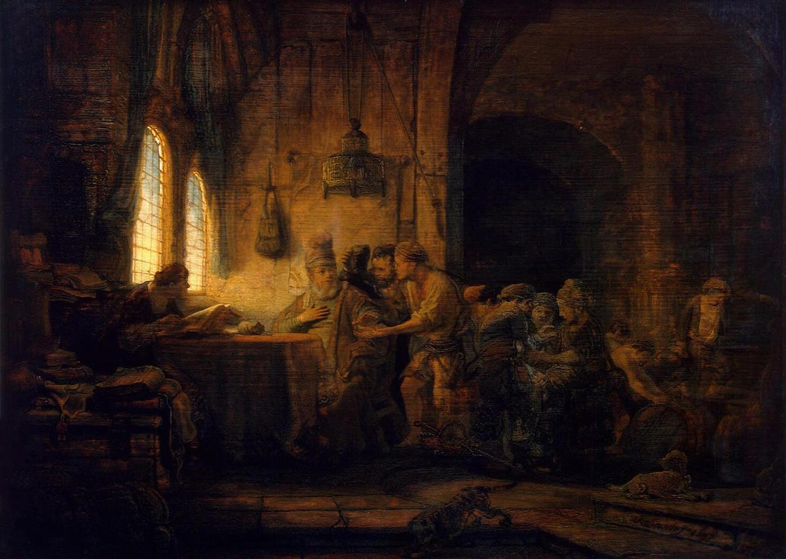

Mateo 20 — La Traducción Mister

⚠ Rembrandt no pinta la viña. Pinta los versículos 8-15 — el ajuste de cuentas — y lo mete dentro de una casa, en una mesa de contabilidad, con el obrero que murmura inclinado sobre ella a plena luz y los demás esperando en penumbra. Es el segundo capítulo seguido cuya imagen es la de un pintor del norte poniendo en escena una parábola como una escena de contaduría (el capítulo 18 tiene a van Hemessen haciendo lo mismo), lo cual dice algo sobre de qué creían estos pintores que trataban las parábolas. Fíjese en que el dueño está sentado y quieto mientras el que discute con él es el que se mueve — y en que el dinero de la mesa ya está contado. Pintado en 1637; hoy en el Hermitage.
{kind=link}
Notas del traductor — versículo por versículo
Cada nota explica la decisión de esta traducción y la compara con el estante en español: la TNM (Traducción del Nuevo Mundo), la Reina-Valera en su recorrido de registro (RV 1909 arcaica ↔ RV60 moderna) y la NVI. Las citas de versiones con derechos reservados se limitan a frases cortas.
La parábola es un corchete, y el capítulo anterior está dentro. 19:30 terminó con «muchos primeros serán últimos, y últimos primeros»; esta parábola abre con «Porque…», lo explica largamente, y se cierra en el v 16 repitiéndolo. Todo lo que hay en medio es un argumento a favor de una sola frase. Y la frase iba dirigida a Pedro, que acababa de preguntar qué recibirían los discípulos por haberlo dejado todo — así que los murmuradores de la parábola no son un sustituto de nadie más: son quienes hicieron la pregunta.
El reloj, y por qué importan las horas. Contadas desde alrededor de las seis de la mañana, la hora tercera son las nueve, la sexta el mediodía, la novena las tres, y la undécima es una hora antes de que acabe la jornada. ⚠ Nótese lo que dicen los últimos cuando se les pregunta por qué están parados: «porque nadie nos ha contratado». No son perezosos: están en paro. La parábola no trata del esfuerzo en absoluto — a nadie se le acusa de trabajar mal — y la defensa del dueño no menciona ni una vez la calidad del trabajo de nadie.
El único jornal. Un denario era la paga corriente de un obrero por un día, y el primer grupo convino en ella (symphōnēsas, «habiendo llegado a un acuerdo»). Su queja en el v 12 es precisa y conviene citarla exacta: no que se les pagara de menos, sino «los has hecho iguales a nosotros». El agravio es la igualdad. Y la respuesta del dueño lo llama hetaire — «amigo», pero una palabra fría, la misma que se usa con el hombre sin traje de bodas (22:12) y la que Jesús le dirige a Judas en el huerto (26:50); ni una sola vez es cálida en este Evangelio.
«¿Es malo tu ojo?» Ho ophthalmos sou ponēros — no un comentario sobre la vista, sino un modismo semítico fijo: el «ojo malo» es la tacañería y la envidia, como el «ojo bueno» es la generosidad (Deuteronomio 15:9, Proverbios 23:6). Mateo ya usó el par, en el Sermón (6:22-23, todavía no traducido a estas páginas en español), donde un ojo «sencillo» llena de luz el cuerpo y uno malo de tinieblas — y ese pasaje está en medio de la enseñanza sobre el dinero, que es exactamente donde está este. El estante conserva casi siempre las palabras literales: la RV «¿es malo tu ojo, porque yo soy bueno?» y la TNM «¿o es inicuo tu ojo?», mientras que la NVI lo explica como «¿acaso tienes envidia?», que da el sentido a costa del modismo. Aquí se conserva el ojo y el modismo va en la nota.
⚠ Y una línea que la tradición de la RV añade al final. Después de «y los primeros últimos», los manuscritos bizantinos continúan: «porque muchos son llamados, mas pocos escogidos» — impreso por la RV. Falta en los manuscritos más antiguos aquí, y es una frase auténtica de Mateo: en 22:14, donde cierra otra parábola y le encaja. Tiene toda la pinta de un copista importando una línea recordada para redondear el párrafo; la TNM no la trae. Su ausencia cambia bastante la temperatura de la parábola: con ella, el relato adquiere un tono de selección y exclusión; sin ella, la última palabra es simplemente que el orden se invierte.
Cada anuncio ha sido más concreto que el anterior. El primero (16:21) nombró Jerusalén, los ancianos, los principales sacerdotes y los escribas. El segundo (17:22-23) quedó reducido al hueso y añadió un verbo: paradidosthai, ser entregado. Este tercero conserva el verbo, lo usa dos veces — entregado a los principales sacerdotes, que a su vez lo entregan — y dice entonces lo que ninguno de los otros dijo: a las naciones (ta ethnē, los gentiles), «para que se burlen de él, lo azoten y lo crucifiquen».
Esa última palabra no se había dicho antes. La crucifixión era un castigo romano, no judío, y por eso los gentiles tienen que entrar en la frase para que la palabra tenga sentido; y la cadena de custodia queda completa, de las autoridades del templo a la potencia ocupante. ⚠ Conviene fijarse en la disposición que Mateo ha hecho: esto se dice en el camino, en privado, a los doce — y el párrafo inmediatamente siguiente es una petición de los dos mejores asientos del reino. No comenta la yuxtaposición. No ha comentado ninguna.
⚠ En Mateo pregunta la madre; en Marcos, los hijos. En Marcos 10:35 vienen Santiago y Juan en persona — «Maestro, queremos que nos hagas lo que te pidamos». En Mateo pide la madre, y los hijos están allí de pie. La diferencia es real y conviene nombrar sin rodeos las explicaciones habituales: que Mateo suaviza un retrato poco favorecedor de dos apóstoles; que Marcos comprime; o que las dos cosas son ciertas —la madre hablando y los hijos queriéndolo—, lo que apoya el propio versículo siguiente de Mateo al hacer que Jesús les responda a ellos, en plural, y no a ella. La biblioteca declara la diferencia en vez de armonizarla, y hace notar que la indignación de los diez en el v 24 va dirigida a «los dos hermanos», no a la madre.
La copa. Potērion es un vaso corriente, y en los profetas es imagen fija de una porción asignada por Dios — de ira casi siempre, de bendición a veces (la copa del Salmo 23 rebosa; la de Isaías 51 es la copa del aturdimiento). Aquí es el destino que él acaba de describir en el camino, y es la misma palabra que usará en Getsemaní, «pase de mí esta copa» (26:39). Los hermanos dicen dynametha, «podemos» — sin la menor idea de a qué están accediendo, cosa que Jesús no corrige: «mi copa, en efecto, la beberéis». Los dos la bebieron, cada uno a su manera; Santiago fue el primero de los Doce en ser ejecutado.
Y una respuesta que no concede nada. «Sentarse a mi derecha y a mi izquierda no es mío concederlo». Los asientos no se niegan y no se otorgan: se declaran ya asignados por otro. ⚠ El versículo se ha leído teológicamente en direcciones opuestas durante siglos — como una limitación del Hijo, o como una afirmación sobre la prerrogativa del Padre. La biblioteca da la frase y no elige. Sí hace notar la broma estructural, siniestra, que Mateo está montando: las siguientes personas descritas a su derecha y a su izquierda, en este Evangelio, son dos ladrones en cruces (27:38).
Dos verbos de dominación, ambos compuestos, ambos algo ridículos. Katakyrieuousin — enseñorearse hacia abajo — y katexousiazousin, ejercer autoridad hacia abajo. El prefijo kata- hace el trabajo, y el griego deja oír la mezquindad de un modo que el español apenas alcanza. La RV lee «se enseñorean» y «ejercen potestad»; aquí se lee «los dominan» y «les hacen sentir su autoridad». Y luego la inversión, en dos peldaños ascendentes: el que quiera ser grande será vuestro servidor (diakonos, la palabra que dará «diácono» — en origen, el que sirve a la mesa), y el que quiera ser primero será vuestro esclavo (doulos, propiedad de otro, sin eufemismo disponible).
La frase por la que existe el capítulo. «El Hijo del Hombre no vino para ser servido, sino para servir, y para dar su vida en rescate en cambio por muchos» — lytron anti pollōn. Lytron es el precio que se paga para liberar a un esclavo o a un cautivo; la preposición anti es la palabra corriente para «en lugar de, a cambio de», y está haciendo trabajo real: la TNM lo vierte «en rescate en cambio por muchos», que es la lectura más exacta del estante y se la sigue aquí, frente al «en rescate por muchos» más plano de la RV. ⚠ Es uno de solo dos lugares de los Evangelios donde Jesús declara el propósito de su muerte con una palabra de transacción (el otro es el paralelo de Marcos), y el vocabulario es el de Isaías: el siervo que «derramó su vida hasta la muerte» y «llevó el pecado de muchos» (Isaías 53:12, ya en estas páginas). ⚠ Sobre «muchos» se lleva discutiendo siglos: si limita el alcance o si es un modismo semítico para «el gran número, todos ellos». La biblioteca informa de la discusión y no la zanja.
Nótese dónde aterriza esto. La enseñanza la provocan dos hombres pidiendo los mejores asientos y diez hombres enfadados porque los pidieron primero. No va dirigida a los poderosos. Va dirigida a gente que no tiene nada y ya está compitiendo por ello.
Dos, no uno — y es una costumbre de Mateo. Marcos tiene en Jericó a un solo mendigo con nombre, Bartimeo (10:46); Lucas tiene a uno, antes de la ciudad y no después. Mateo tiene dos, sin nombre. Hace lo mismo con los endemoniados de Gadara, donde Marcos tiene uno (8:28), y la nota del capítulo 8 expuso las explicaciones que se ofrecen: que Mateo duplica a propósito, para lectores que sabían que un asunto se establece por el testimonio de dos; que ha fundido dos incidentes; o que sencillamente conserva un dato que los otros dejaron caer. ⚠ Y hay una complicación más que esta biblioteca no debe limar: Mateo ya ha contado una historia de dos ciegos que lo llaman «Hijo de David» en 9:27-31 (ese capítulo todavía no está traducido a estas páginas en español). Si eso es un doblete —una tradición contada dos veces— o dos sucesos, se discute de verdad. Mateo cuenta los dos, y esta traducción también.
El título, y quién puede decirlo. «Hijo de David» abrió el Evangelio enterrado en una genealogía (1:1). Como grito vivo lo han lanzado dos ciegos (9:27), una mujer cananea (15:22) y ahora otros dos ciegos — cada vez alguien sin ningún rango para conferir un título real, y cada vez por encima de la objeción de quienes los rodean. La multitud hace aquí exactamente lo que los discípulos hicieron con los niños en 19:13: mandarlos callar. Después lo gritarán las multitudes a las puertas de Jerusalén, y las autoridades también objetarán.
Y la palabra que cierra el capítulo. Splanchnistheis — conmovido en las entrañas. Mateo la usa de Jesús cinco veces, y esta es la última; la nota de 15:32 señaló que quedaba un uso por delante, y es este. ⚠ Nótese lo que hacen entonces los sanados: «le siguieron» — el verbo del discipulado, y el camino en el que él está lleva a Jerusalén. El joven rico, que veía, se fue (19:22); dos ciegos, ya con vista, echan a andar hacia el anuncio de la pasión que nunca oyeron.
Patrones que conviene llevarse
Dónde esta traducción mantiene las palabras exactas o distintas: el ojo malo conservado como ojo (con la RV, frente al «¿tienes envidia?» explicativo de la NVI), con el par ojo-bueno/ojo-malo del Sermón nombrado en la nota; «los dominan» y «les hacen sentir su autoridad» para los dos compuestos con kata-; servidor (diakonos) y esclavo (doulos) mantenidos como dos palabras distintas en dos peldaños ascendentes; «rescate en cambio por muchos» para lytron anti pollōn, conservando anti a la vista (con la TNM, la lectura más exacta del estante aquí); y amigo para hetaire, con la nota de que nunca es cálido en este Evangelio.
Ecos pagados. «Los últimos serán primeros» (v 16) — el corchete en torno a 19:30, que esta parábola fue escrita para explicar y luego repite palabra por palabra; el ojo malo (v 15) — el 6:22-23 del Sermón, y los dos pasajes están dentro de enseñanzas sobre el dinero; entregado (vv 18-19) — el verbo plantado en 17:22, usado aquí dos veces y ahora con los gentiles y la cruz nombrados; Hijo de David (v 30) — 9:27 y 15:22, siempre en boca de alguien sin rango para decirlo; los dos ciegos — la costumbre duplicadora de Mateo, señalada en 8:28 y prometida allí para este capítulo; y splanchnizomai (v 34) — la quinta y última vez que Mateo la usa de Jesús, exactamente como decía la nota de 15:32.
Ecos plantados. La copa (v 22), esperando Getsemaní; a mi derecha y a mi izquierda (v 23), esperando dos cruces; hetaire, «amigo» (v 13), esperando una sala de bodas y un beso en un huerto; y Hijo de David (v 30), esperando un capítulo para las puertas de Jerusalén.
⚠ Y tres lugares donde la biblioteca informa en vez de decidir. La añadidura al final del v 16 («porque muchos son llamados, mas pocos escogidos»), ausente aquí de los manuscritos más antiguos y original en 22:14 — dejada fuera, con lo que su ausencia cambia declarado. La madre del v 20, donde Mateo y Marcos difieren sobre quién hace la petición — se da la diferencia, se nombran las armonizaciones, no se adopta ninguna. Y «muchos» en el v 28, discutido durante siglos como un límite o como un modismo semítico para el número entero.
Siguiente en este libro: capítulo 21 — un pollino y un camino sembrado de mantos, y las multitudes gritando el mismo título que acaban de gritar dos ciegos; una mesa volcada en el templo y una cita sobre una cueva de ladrones; una higuera sin nada encima; la pregunta sobre el bautismo de Juan que las autoridades no pueden permitirse responder; y dos parábolas apuntadas justo a los hombres que preguntan.